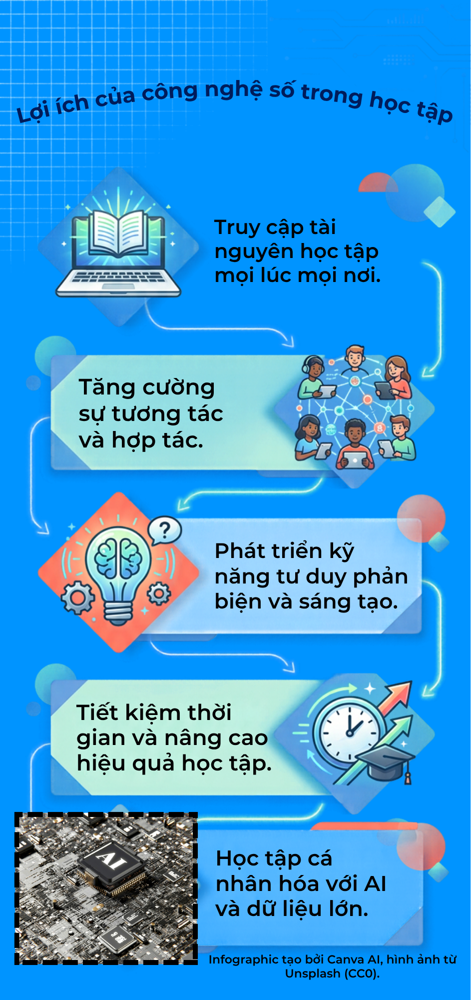

Môn học: Tin học văn phòng (CT005)
Họ và tên: Nguyễn Minh Phúc
Mã số sinh viên: B2604665
Lớp học phần: CT005_Lab05
Tài liệu báo cáo nhóm về chủ đề "Ứng dụng công nghệ số trong học tập".
Xem file PDF báo cáoInfographic về lợi ích của công nghệ số được thiết kế bằng Canva AI.

Video ngắn được biên tập bằng CapCut/Shotcut và phát trực tiếp từ YouTube: